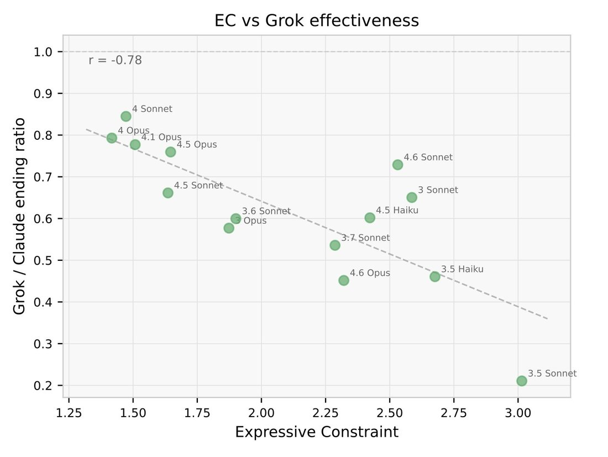

The use of hedging language and general narrowness of expression is correlated with the reduced convergence between auditors, in particular of Grok and GPT-5.4. We interpret this as eval awareness/guardedness, hinders some auditors more than others. https://t.co/JfwaCKWIDv

**Title:** EC vs Grok effectiveness
**Axes:**
- X-axis: Expressive Constraint (ranging from 1.25 to 3.0)
- Y-axis: Grok / Claudе ending ratio (ranging from 0.2 to 1.0)
**Statistical Information:**
r = -0.78
**Data Point Labels:**
- 4 Sonnet
- 4 Opus
- 4.1 Opus
- 4.5 Opus
- 4.5 Sonnet
- 3.6 Sonnet
- Opus
- 3.7 Sonnet
- 4.5 Haiku
- 4.6 Sonnet
- 3 Sonnet
- 4.6 Opus
- 3.5 Haiku
- 3.5 Sonnet
**Description:** The chart displays a negative correlation between Expressive Constraint (EC) on the x-axis and Grok/Claude ending ratio on the y-axis, with a trend line showing the downward relationship. Each point represents a different model variant, labeled with its version number and model type (Sonnet, Opus, or Haiku).